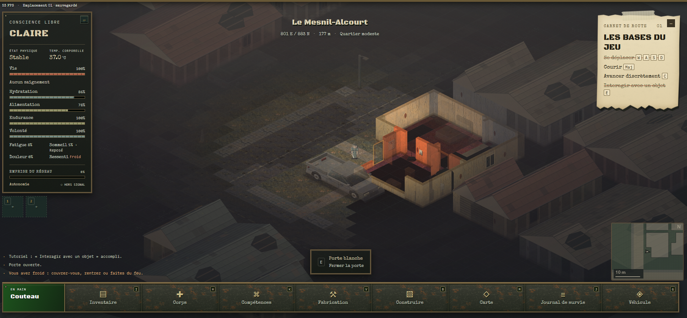
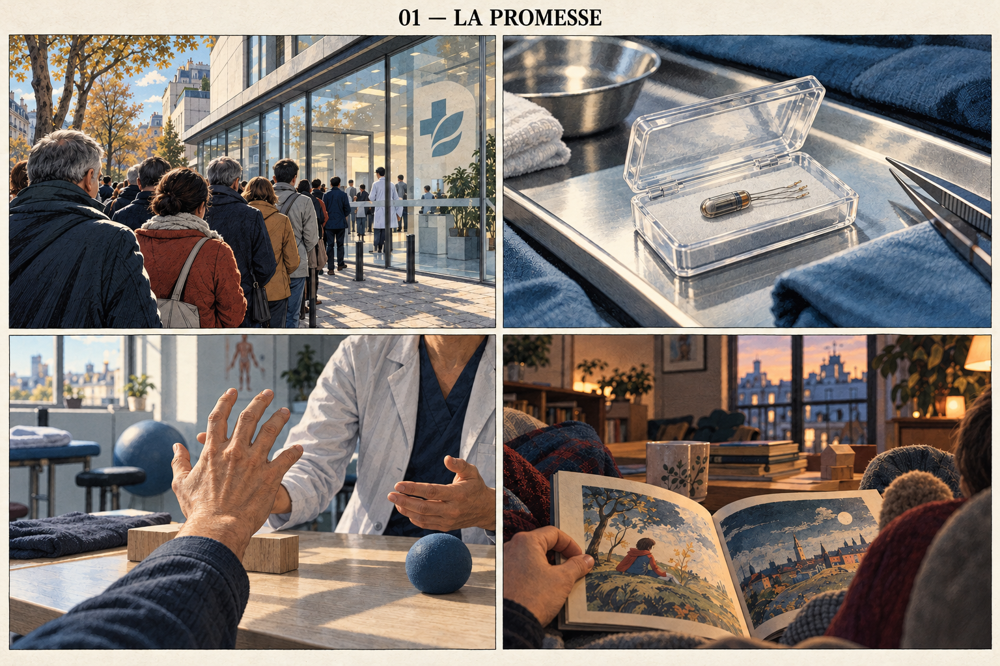
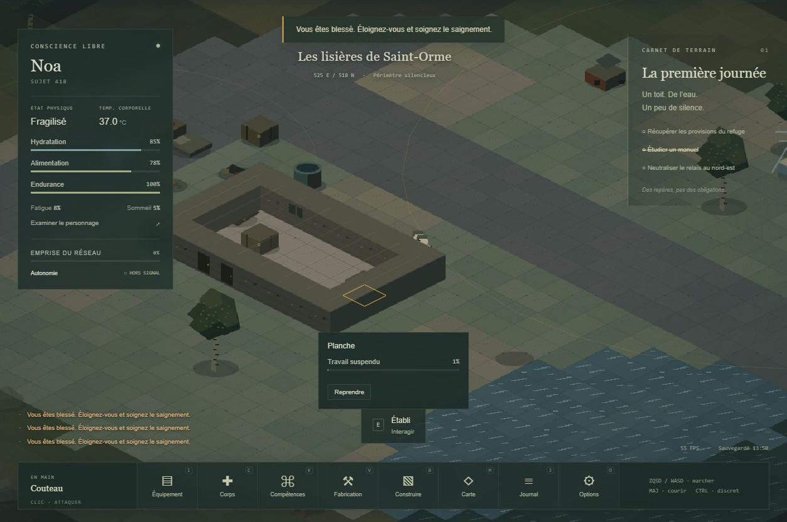

Projet en développement
Jeu vidéo de survie
Un jeu de survie sandbox en 2D isométrique, avec génération procédurale, jouable dans le navigateur et intégrable dans une application. Un projet qui mêle conception, tests et direction artistique.

Un projet plus ambitieux
J’avais envie de me lancer dans un vrai projet, plus ambitieux. J’ai commencé avec ChatGPT 6 Astra, puis, au bout d’une semaine, j’ai pris Claude. Le code a ensuite été principalement réalisé avec Opus 5.5, avec quelques briques produites par Astra 6. J’ai également utilisé Opus pour les traductions et les sprites, et Astra pour les images et la narration.
Il s’agit d’un jeu de survie sandbox en 2D isométrique, avec génération procédurale. Il est jouable dans un navigateur et peut être intégré dans une application.
Jusqu’où aller avec Phaser ?
Je connaissais déjà Phaser, mais je ne pensais pas qu’on pouvait obtenir quelque chose d’aussi détaillé avec. En toute franchise, mon idée de départ était d’utiliser Godot.
J’ai préféré voir dans quelle direction Astra partait, puis je me suis dit : pourquoi pas, voyons jusqu’où on peut aller ! Je pense que l’équipe de Phaser serait contente de voir le résultat.
Construire et faire évoluer le jeu
Le projet a commencé le 4 octobre. J’ai d’abord établi un plan, puis développé les fonctionnalités une à une. Une fois la base en place, j’ai enrichi les mécaniques et amélioré les graphismes progressivement.
Plusieurs passes sur le code ont permis de garder la documentation à jour. Certains fichiers ont aussi dû être séparés pour conserver une taille raisonnable et faciliter leur suivi.
Reprendre les lumières à la base
La gestion des lumières a demandé une véritable reprise : cycle jour/nuit, éclairages intérieurs allumés ou éteints, lampe de poche, phares de voiture et diffusion de chaque source lumineuse.
Au départ, cette fonctionnalité était mal codée et mal prise en charge par l’IA. J’ai dû la revoir pas à pas pour obtenir un code plus propre et arrêter de provoquer des régressions à chaque modification.
Tester le ressenti, pas seulement le fonctionnement
Tout en « vibe codant », j’ai effectué de nombreux tests, noté mes retours et fait appliquer les ajustements nécessaires.
Comme dans toute conception de jeu vidéo, une fonctionnalité pouvait sembler intéressante sur le papier, puis ne pas donner le bon ressenti une fois en jeu. Il m’est arrivé de revoir toute son intégration pour retrouver l’expérience que je souhaitais.
De l’histoire à l’introduction
La création de l’introduction avec Astra a été particulièrement intéressante. J’ai commencé par lui écrire l’histoire entière du jeu, puis je lui ai fait générer des images à partir de cette histoire. Plusieurs itérations ont été nécessaires pour obtenir le style que je voulais.
J’ai ensuite fait rédiger une narration sous forme de texte. Cette base a aussi servi à créer des affiches, des prospectus, des journaux et des graffitis intégrés au jeu.
Pour accompagner le texte en images, j’ai demandé un storyboard pour chaque grande étape de la narration. Après avoir sélectionné les propositions, j’ai choisi celle dont je préférais le style et fait harmoniser les autres autour de cette référence.
J’ai précisé, pour chaque image, les éléments à mettre en valeur et le ton recherché. Ce suivi était nécessaire pour conserver une direction artistique cohérente : au fil des générations, j’ai constaté que l’IA avait tendance à s’en éloigner.


Trouver la voix du narrateur
Je souhaitais une voix masculine. Un ami s’est enregistré sur une phrase d’une dizaine de secondes, mais le rendu était très monotone. J'ai essayé d'indiquer un rythme à Astra (ralentir les fins de phrase, travailler autour de la ponctuation, etc.), cela améliorait le rendu mais je n'étais toujours pas satisfaite. Je me suis alors enregistrée, puis Astra a mixé nos deux voix.
Je ne suis pas parfaitement satisfaite du résultat, mais je le trouve suffisamment bon pour le conserver.
Je conserve toutefois de gros doutes sur la pertinence de cette voix et de ces intonations françaises dans des langues plus éloignées. Cela pourrait devenir un point de blocage en travaillant sans MCP, avec uniquement les outils déjà intégrés ou libres d’accès.
En bonus : les premières étapes
Cette première capture montre bien la « patte Astra ». J’ai eu du mal à m’en éloigner pour donner au jeu l’identité visuelle que je souhaitais.
C’est aussi pour cette raison que j’ai ensuite confié la génération des sprites à Opus : dans mes essais, je l’ai trouvé moins attaché à ses choix visuels habituels, il va mieux suivre la DA établie et prendre en compte les sources d'inspirations proposées.

